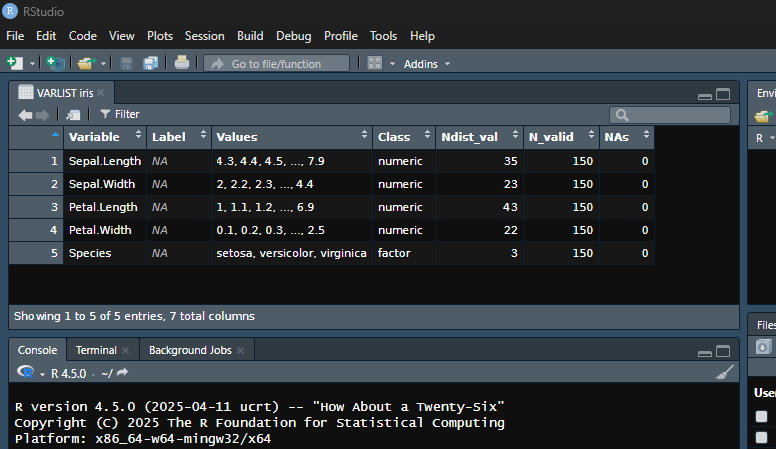
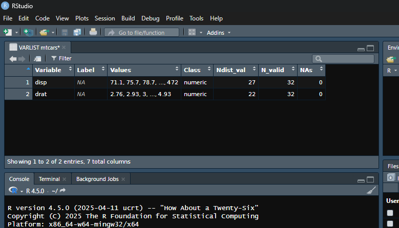

spicy is designed to make variable exploration, documentation, and descriptive statistics fast, expressive, and easy to use.
What is spicy?
spicy is an R package for quick, consistent, and elegant exploration of data frames. It helps you:
- Extract variable metadata and display compact summaries of dataset variables using
varlist()(withvl()as a convenient shortcut), including names, labels, values, classes, number of distinct non-missing values, number of valid observations, number of missing observations. Similar to the “Variable View” in SPSS or the “Variables Manager” in Stata. - Generate an exportable codebook using
code_book(), which extendsvarlist()with support for CSV, Excel, PDF, and Word exports, either interactively (viaDT::datatable) or programmatically. Ideal for documenting all the variables present in a data frame. - Compute frequency tables with
freq(), row-wise means withmean_n(), row-wise sums withsum_n(), and counts of specific values usingcount_n()— all with automatic handling of missing data. - Explore relationships between categorical variables using
cross_tab()for contingency tables andcramer_v()for association strength. - Copy data frames or result tables directly to the clipboard using
copy_clipboard()for fast export to spreadsheets or text editors. - Extract and assign variable labels from column headers with
label_from_names(), especially useful for LimeSurvey CSV exports where headers follow a “name [separator] label” pattern — any string can be used as the separator (e.g., “.”, ” - “,”:“, etc.). - Handle
labelled,factor,Date,POSIXct, and other commonly used variable types.
All with intuitive functions that return clean, structured outputs.
Installation
For the stable version, install from CRAN.
install.packages("spicy")You can install the development version of spicy from GitHub with:
# install.packages("pak")
pak::pak("amaltawfik/spicy")Example usage
Here are some quick examples using built-in datasets:

# Get a summary of the variables that start with "d" in the Viewer
# Asterisks (*) in the title indicate that the data frame has been subsetted
vl(mtcars, starts_with("d"))
# Get a summary of all variables as a tibble
varlist(iris, tbl = TRUE)
#> # A tibble: 5 × 7
#> Variable Label Values Class Ndist_val N_valid NAs
#> <chr> <chr> <chr> <chr> <int> <int> <int>
#> 1 Sepal.Length <NA> 4.3, 4.4, 4.5, ..., 7.9 nume… 35 150 0
#> 2 Sepal.Width <NA> 2, 2.2, 2.3, ..., 4.4 nume… 23 150 0
#> 3 Petal.Length <NA> 1, 1.1, 1.2, ..., 6.9 nume… 43 150 0
#> 4 Petal.Width <NA> 0.1, 0.2, 0.3, ..., 2.5 nume… 22 150 0
#> 5 Species <NA> setosa, versicolor, virginica fact… 3 150 0
# Tabulate frequencies with sort alphabetically (Z-A)
freq(iris, Species, sort = "name-")
#> Frequency table: Species
#> ────────────────────────────
#> Values N % Valid%
#> ────────────────────────────
#> virginica 50 33.3 33.3
#> versicolor 50 33.3 33.3
#> setosa 50 33.3 33.3
#> Total 150 100.0 100.0
#> ────────────────────────────
#> Class: factor
#> Data: iris
# Cross-tab with column percentages
cross_tab(mtcars, cyl, gear)
#> Crosstable: cyl x gear (%)
#> ─────────────────────────────────────────
#> Values 3 4 5 Row_Total
#> ─────────────────────────────────────────
#> 4 6.7 66.7 40.0 34.4
#> 6 13.3 33.3 20.0 21.9
#> 8 80.0 0.0 40.0 43.8
#> Column_Total 100.0 100.0 100.0 100.0
#> N 15.0 12.0 5.0 32.0
#> ─────────────────────────────────────────
#> Chi-2 = 18 (df = 4), p = 0.00121, Cramer's V = 0.53
# Cross-tab with row percentages
cross_tab(mtcars, cyl, gear, rowprct = TRUE)
#> Crosstable: cyl x gear (%)
#> ─────────────────────────────────────────
#> Values 3 4 5 Row_Total N
#> ─────────────────────────────────────────
#> 4 9.1 72.7 18.2 100.0 11
#> 6 28.6 57.1 14.3 100.0 7
#> 8 85.7 0.0 14.3 100.0 14
#> Column_Total 46.9 37.5 15.6 100.0 32
#> ─────────────────────────────────────────
#> Chi-2 = 18 (df = 4), p = 0.00121, Cramer's V = 0.53
# Cross-tab with column percentages grouped by a single variable
cross_tab(mtcars, cyl, gear, by = am)
#> $`0`
#> Crosstable: cyl x gear | am = 0 (%)
#> ───────────────────────────────────
#> Values 3 4 Row_Total
#> ───────────────────────────────────
#> 4 6.7 50.0 15.8
#> 6 13.3 50.0 21.1
#> 8 80.0 0.0 63.2
#> Column_Total 100.0 100.0 100.0
#> N 15.0 4.0 19.0
#> ───────────────────────────────────
#> Chi-2 = 9 (df = 2), p = 0.0113, Cramer's V = 0.69
#>
#> $`1`
#> Crosstable: cyl x gear | am = 1 (%)
#> ───────────────────────────────────
#> Values 4 5 Row_Total
#> ───────────────────────────────────
#> 4 75.0 40.0 61.5
#> 6 25.0 20.0 23.1
#> 8 0.0 40.0 15.4
#> Column_Total 100.0 100.0 100.0
#> N 8.0 5.0 13.0
#> ───────────────────────────────────
#> Chi-2 = 3.8 (df = 2), p = 0.146, Cramer's V = 0.54
# Compute row-wise mean/sum (all values must be valid by default) or specific value
df <- data.frame(
var1 = c(10, NA, 30, 40, 50),
var2 = c(5, NA, 15, NA, 25),
var3 = c(NA, 30, 20, 50, 10)
)
df
#> var1 var2 var3
#> 1 10 5 NA
#> 2 NA NA 30
#> 3 30 15 20
#> 4 40 NA 50
#> 5 50 25 10
mean_n(df)
#> [1] NA NA 21.66667 NA 28.33333
sum_n(df)
#> [1] NA NA 65 NA 85
count_n(df, count = 10)
#> [1] 1 0 0 0 1
count_n(df, special = "NA")
#> [1] 1 2 0 1 0
df |> mutate(count30 = count_n(count = 30))
#> var1 var2 var3 count30
#> 1 10 5 NA 0
#> 2 NA NA 30 1
#> 3 30 15 20 1
#> 4 40 NA 50 0
#> 5 50 25 10 0
# Extract labels from column names like "varname. label"
# This format ("name. label") is the default in LimeSurvey CSV exports
# when using: Export results → Export format: CSV → Headings: Question code & question text.
# It uses ". " (dot + space) as the default separator between the question code and question text.
df <- tibble::tibble(
"age. Age of respondent" = c(25, 30),
"score. Total score. Manually computed." = c(12, 14)
)
out <- label_from_names(df)
# View assigned labels
labelled::var_label(out)
#> $age
#> [1] "Age of respondent"
#>
#> $score
#> [1] "Total score. Manually computed."All functions can be directly used in pipelines.
Why use spicy?
- Clean, expressive output
- Works well with labelled survey data
- Handles weights, percentages, NA counts
- Great for exploring data and variables, teaching, or reporting
Citation
If you use spicy in a publication or teaching material, please cite it as:
Tawfik, A. (2025). spicy: Tools for Data Management and Variable Exploration (Version 0.1.0) [R package]. https://doi.org/10.5281/zenodo.15397865
You can also get the citation in R format by typing:
citation("spicy")Or download the BibTeX citation directly.
License
This package is licensed under the MIT license. See LICENSE for details.